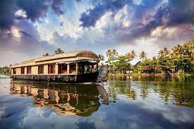

Alappuzha Beach
Alappuzha beach is one of the major tourist spot in Alappuzha town. Alappuzha Lighthouse situated near to the beach. Beach is accessible through various town roads and an elevated highway will passing by the beach as part of Alappuzha bypass in order to preserve the beauty of the area. Camel safaris was another attraction in beach which introduced a couple of years ago but it got banned by authorities.

Pathiramanal Island
Pathiramanal is a small island inMuhamma panchayat of Alappuzha district. The name Pathiramanal means 'midnight sand'. The scenic beauty of both sides of the lake as well as that of the island is mind blowing. It is home to many rare varieties of migratory birds from different parts of the world. It is surrounded by the Vembanad Lake, stretching from Alappuzha to Kochi and the Kayamkulam Lake.

Alleppey Lighthouse
The Alappuzha Lighthouse is situated in the coastal town of Alappuzha, Kerala. It was built in 1862 and is a major tourist attraction. Visitors are allowed between 1500 hours and 1630 hours on every weekday at an admission fee of 20 rupees for Indian citizens and 50 rupees for foreigners. This is the first of its kind in the Arabian sea coast of Kerala.

Krishnapuram Palace
Located in the district of Alappuzha in Kerala, near the town of Kayamkulam, Krishnapuram Palace was built in the 18th century by Anizham Thirunal Marthanda Varma, the ruler of the former princely state of Travancore. He built it after Kayamkulam was conquered and made a part of Travancore.Krishnapuram Palace is built in the conventional architectural style of Kerala with gabled low roofs, narrow corridors, thick-framed doors, and dormer windows. It is built in the Pathinaru-kettu (16 blocks) style, in which rooms are built around four inner courtyards called Nadu-muttams.

Revi Karunakaran Memorial Museum
Mr. Revi Karunakaran will always be remembered for his passion and the massive role he played in improving the coir industry in Kerala. The museum built to showcase his art collection stands testament to a man with a fine eye and love for a multitude of art forms. The ivory and crystal collections are among the largest of its kind. A collection of Tanjore paintings shine brightly on its catalogue along with a 200 sq. ft. mural made completely from vegetable dyes. Its special 'Kerala Room' has over 3800 unique pieces that chart the growth and evolution of our culture.

Kalloorkad St. Mary's Basilica
St. Mary's Syro-Malabar Catholic Forane Church, Champakulam, located in Champakulam 16 km from the heart of the city Alappuzha. St. Mary's Syro-Malabar Catholic Forane Church, Champakulam is an ancient Christian Church in Kerala. It belongs to the Syro-Malabar Church under the archeparchy of Changanacherry. It is a Forane church, with several Parishes under it. Champakulam Kalloorkadu St. Mary's Forane Church is one of the oldest Christian churches in India and the mother church of almost all Catholic Syrian churches in Alleppey District. Believed to be established in AD 427.

INTERNATIONAL COIR MUSEUM
This museum commissioned by the Coir Board at the CCRI premises is dedicated to tell the story of Coir in Kerala from the time of its inception, the industry and Coir Board’s role today in transforming the fibre into an international product. Working on the theme ‘Coir Beautiful’, Design Combine, not only designed the whole exhibition, but was involved in the evolution of the story line, visualising the tablaeus and also the conceptualisation of artwork all focussed towards a wholesome museum experience.

HouseBoats
Kerala's marvelous natural beauty has led to the state being named “God’s own country”. Houseboats are the major selling point for the tourism industry of Kerala. These houseboats have received attention of travelers from the entire world. A houseboat stay is something that is essential while on a Kerala tour.The houseboats vary greatly in their size from those having single bedrooms to those having around ten bedrooms! The houseboats are mainly divided into two categories: deluxe and premium.